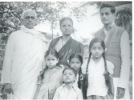

What was this man like in person, in real life? While as a composer, he might have said lofty things in a song, did he live up to them?
The answer is a definitive yes. He pursued the muse of Music all his life never for personal gain but totally for his inner enrichment, for spiritual growth
He was gentle in his speech and gentle in everything he did, except perhaps when it came to members of the audience talking among themselves during a musical concert! At such times he is said to have made some curt remarks to silence them. He liked order and efficiency and liked to do things without any fuss. He liked good food but never indulged in it.
He used to be dressed in simple but dignified attire. While in his younger days he was given to silks and the Mysore jari peta, in later life he took to cottons. He wore khaddar shirts, although not exclusively. He never liked bright colours, and always preferred pastel shades. The curious thing was that clothes never made him, it was he who made them. He lent dignity to what he wore.
As a householder, he was supported by an extraordinary wife, Smt. Saraswathy, who managed the household affairs most efficiently and allowed him free time to pursue his art to the best extent. She was in her own right a most noteworthy person, being the daughter of the venerable Vajapeyam Venkatasubbayya, a direct disciple of Gopal Krishna Gokhale and a member of the Servants of India Society, Madras. She was the founder of Mysore Makkala Koota, a children’s organization and was a close follower of Smt. R. Kalyanamma of Bangalore who did yeoman service for women’s and children’s cause.  Yoganarasimham gave full support to his wife in all her work and also participated in the activities of Makkala Koota. He was an exemplary father who never said a harsh word to any of his children and encouraged them to choose their goals and pursue them honestly.
Yoganarasimham gave full support to his wife in all her work and also participated in the activities of Makkala Koota. He was an exemplary father who never said a harsh word to any of his children and encouraged them to choose their goals and pursue them honestly.
{kind=link}
 He took very special interest in the musical education of his youngest daughter Neeraja Achuta Rao to whom he taught all his compositions and imparted his musical ideas. She assisted him in preparing the manuscript of his book ‘Gita-Kusumanjali’ and in turn has imparted her knowledge to her daughter Jyothi and granddaughter, Sahana. She is also running a music school for children, named Srujana Kala Mandira in Mysore to propagate the musical heritage she inherited.
{kind=link}
 At home, Yoganarasimham instituted a prayer time, morning and evening, when the family would gather together and recite Sanskrit shlokas and passages from Bhagavadgita and sing songs and bhajans by Tyagaraja, Dikshitar, Purandaradasa, Tulasidas, Nanak, Kabir and Meerabai.
At home, Yoganarasimham instituted a prayer time, morning and evening, when the family would gather together and recite Sanskrit shlokas and passages from Bhagavadgita and sing songs and bhajans by Tyagaraja, Dikshitar, Purandaradasa, Tulasidas, Nanak, Kabir and Meerabai.
Saturday-night Bhajans: Yoganarasimham never clamoured for fame. Although he was an accomplished singer, he never took to the concert stage as he had decided early on, but was most happy singing to a group of friends and sahrudayas, that included such stalwarts as Rallapalli Anantakrishna Sarma, Vidvan Channakeshavaiya, Sri B.K. Padmanabha Rao and Professor V. Sitaramayya. Many a music lover of old Mysore used to fondly remember the beautiful Saturday night bhajans that Yoganarasimham used to hold at his home when he would pour out his heart in a full-length performance.
 Interest in Drama: As a lover of literature, Yoganarasimham was greatly interested in drama. During his college days he took part in many plays. He played the role of Duryodhana in Bhasa’s Oorubhanga so well that the then chief Post Master of Mysore had presented him with a copy of Bhasa’s Pratimanatakam and, decades later it was still fresh in the memory of Professor V. Sitaramayya as he recalled his good old friend in his preface to Gita-kusumanjali. He was an active member of the Amateur Dramatic Association (ADA) of Bangalore and had played the role of Tansen in one of its productions. As producer of Sanskrit Programs for All India Radio, Mysore and Bangalore, he produced many plays including the unforgettable Shakuntala , in which he played Kanva himself, and other classical plays, raising the Rasamanjari program to a prestigious level.
Interest in Drama: As a lover of literature, Yoganarasimham was greatly interested in drama. During his college days he took part in many plays. He played the role of Duryodhana in Bhasa’s Oorubhanga so well that the then chief Post Master of Mysore had presented him with a copy of Bhasa’s Pratimanatakam and, decades later it was still fresh in the memory of Professor V. Sitaramayya as he recalled his good old friend in his preface to Gita-kusumanjali. He was an active member of the Amateur Dramatic Association (ADA) of Bangalore and had played the role of Tansen in one of its productions. As producer of Sanskrit Programs for All India Radio, Mysore and Bangalore, he produced many plays including the unforgettable Shakuntala , in which he played Kanva himself, and other classical plays, raising the Rasamanjari program to a prestigious level.
As Principal of the Sanskrit colleges, he encouraged students and faculty to take part in Sanskrit plays, and helped them develop a taste of the wonderful Sanskrit theater.
Meeting with Tagore: As a young student, he had the rare opportunity of singing in the presence of poet Rabindranath Tagore. He sang so well that the poet beckoned him to come close, patted his back affectionately, and said in Sanskrit, “saadhu geetam bhavataa” (“you sang well”). It was a memory that Yoganarasimham cherished all his life.
Literary Contributions: Besides several newspaper articles and musical reviews, Yoganarasimham translated the autobiography of Maharshi Karve and his favourite author Bertrand Russell’s Conquest of Happiness into Kannada. He also adapted a play by the French Playwright Moliere whom he admired greatly into Kannada under the title Mansillad madve.
Influence of Gandhi and Nationalist Movement: He was deeply influenced by Gandhi and the nationalist movement. Though a government servant, he was a nationalist at heart and had the courage to support and stand by his son (Sharada Prasad) who directly participated in the freedom struggle and went to prison for it. As a high school headmaster, he used to be posted to remote places but no matter where he was, he was devoted to his students and never underestimated their potential. Distinguished Kannada writer and Jnanpith Laureate Dr. U.R. Ananthamurthy, who was a student of his at one such place, Tirthahalli, a small town in the Malnad region of Karnataka in the Western Ghats, recalls that Yoganarasimham introduced Tagore and Shakespeare to the students and used the writings of Gandhi and Nehru in his classes not only as models of composition but also to open their minds and instill in them national awareness.
There is a saying in Kannada: "ele mareya kaayi", referring to someone who shuns publicity for himself. Literally it means a fruit in the shadow of a leaf. Sri B.V.K. Sastry, a well-known music and art critic, once described Yoganarasimham as not just a fruit in the shadow of a leaf but one that sought the shadow of a leaf to hide under! However, his presence was always felt, unmistakably. Sastry goes on to say that when the performing musician at a concert became aware that Yoganarasimham was present in the audience, he/she would take extra care about the performance. Never given to self-aggrandizement, Yoganarasimham lived a life that may seem somewhat remote and unreal to the present generation, where self-proclamation seems to be the order of the day. But yet, he never despaired of them and always remained optimistic, as evidenced by his composition arbhaka-gitam.
He knew the rare art of deriving the best out of every spare moment. As he once said, “Killing time has never been my problem. My music is always with me. It keeps me occupied with exploring some raga or discovering some hidden beauty of a composition that had evaded me till then.”
Ultimately, what did he want in life, what did he want his life to be like? In his kriti saphalam jeevitam, set to raga Kuntalakusumavali, he pleads with his family deity Narasimha to grant him fulfillment in his life. And how does he picture it? He wants to be like a tree laden with plenteous fruit, its branches bent low by their weight.
Sri Yoganarasimham’s Other Musical Contributions
Besides immersing himself in his own musical pursuits, Yoganarasimham was an organizer of a music sabha in Mysore that rendered valuable service. This was Sangita Kalabhivardhini Sabha of Mysore of which the venerable Sri Vasudevacharya was the first president. After his departure to the Kalakshetra, Adyar, at the invitation of Smt. Rukmini Devi Arundale, Yoganarasimham took over the helms. Under his expert guidance, the Sabha produced two extremely valuable publications: Compositions of Mysore Sadashiva Rao1 and Compositions of Veena Seshanna2. The meticulous scholar that he was, he brought to bear exacting standards on these publications.
Yoganarasimham was an excellent speaker. But again there was a difference. He made no attempt to sway the public with glittering phrases and cliché-ridden pronouncements, but presented his material in a genuine, intimate and authentic way. As such, he would excel in smaller gatherings that were prepared to go on an intellectual and aesthetic exploration. He spoke on Tyagaraja extensively, explaining his philosophy, and demonstrated his lectures with singing of choice musical passages from the composer. He also presented a number of talks on All India Radio. He had a pleasing, intimate voice, and a sense of the power of language. He never wrote his speeches but dictated them to preserve the personal immediacy. As such his radio talks on Tyagaraja and Purandaradasa were extremely illuminating.
He was a contributor to the journals of Music Academy of Madras, Krishna Gana Samaja and other institutions of repute. He wrote on a variety of topics ranging from an analysis of Dikshitar’s Navagraha kritis to the importance of voice culture, a topic rarely touched upon in Karnatak system. His paper, Voice Culture: an Urgent Problem in Karnatak Music, is worthy of careful study by practicing musicians as well as students.
He was a member of AIR’s Central Advisory Board for Music, where his views on music were heard with respect. Dr. B.V. Keskar, erstwhile Minister for Information and Broadcasting, was a great admirer of the composer.
Yoganarasimham was very interested in the vachanas of Shiva-sharanas and he set many of them to music. These were broadcast from AIR Mysore and Bangalore. A distinguishing feature of these was that they were set to ragas in the Karnatak style, a departure from the more commonly used Hindusthani style.
As an educationist, Yoganarasimham always lamented that there was not enough attention to music in our educational system. He served as a music examiner for the Department of Public Instruction and as Producer of Educational Broadcasts of All India Radio tried to introduce music appropriately in the programs he produced.
“Saadhu geetam bhavataa”
Poet Tagore’s Appreciation of Yoganarasimham’s Singing
When Poet Rabindranath Tagore visited Mysore at the invitation of the Maharajah of Mysore (about 1919), a public reception was accorded to him. It fell to Yoganarasimham’s lot to sing the invocation. But it was a last minute request and Yoganarasimham, who was a young college student at that time, had not much time to prepare himself. Yet he sang so well that the great poet beckoned him to come near him and patting his back affectionately, said in Sanskrit “Saadhu geetam bhavataa” (“You sang well!”). It was one of the memories Yoganarasimham cherished all his life.
Yoganarasimham’s Involvement with Drama
After many centuries of total obscurity, thirteen Sanskrit plays of Bhasa were discovered in 1912 by T. Ganapathi Sastri of Tiruvanantapuram and were published in the Trivandrum Sanskrit Series. The credit for presenting them for the first time on stage goes to Mysore University staff and students. Yoganarasimham was one of the actors in those plays and he excelled in the role of Duryodhana, as the tragic yet valiant hero of ‘Oorubhanga’. His acting was so natural and impressive that the Chief Post Master of Mysore of that time presented him with a copy of ‘Pratimanatakam,’ another of Bhasa’s plays, with the inscription “Presented to Mr. Yoganarasimham in appreciation of his high ability in acting some of Bhasa’s characters.”
 Later when he was Principal of the Maharaja’s Sanskrit College of Mysore, he produced many Sanskrit plays and also acted in some of them, including ‘Oorubhanga.’
Later when he was Principal of the Maharaja’s Sanskrit College of Mysore, he produced many Sanskrit plays and also acted in some of them, including ‘Oorubhanga.’
In his career as a government servant, whenever he was posted to Bangalore, Yoganarasimham revived his connection with stage. He acted as the singing sage Narada or the Sutradhara in several plays produced by the Amateur Dramatic Association of Bangalore, along with the famed Kannada writer and scholar, Devudu Narasimha Sastry, and M.L. Sreenivasa Sastry.
He wrote a social satire ‘Mansilladmadve,’ an adaptation of a Moliere play, which was staged by several amateur drama troupes. He also wrote a humorous skit named ‘natkad Praktisu,’ based on Maurice Baring’s play ‘The Rehearsal.’ As the names suggest, the plays were in colloquial Kannada of the urban class, popularized by T.P. Kailasam.
Years later, when he was the officer in charge of the educational programmes in All India Radio, Bangalore, he produced several Sanskrit dramas in its prestigious fortnightly programme Rasa-manjari.
Sri H. Yoganarasimham as a Composer
Several unique features of his musical genius are manifested in his compositions.
Concept of Raga: Yoganarasimham’s approach to music was essentially aesthetic. He seems to have developed a highly artistic concept of the raga not only by listening to the great masters of his time, but also by studying the basic texts on music and, perhaps more than anything else, by dhyana - adoring contemplation – of it. H.Y. Sharada Prasad, his eldest son, recalls how the composer used to immerse himself for months on end in meditating upon a single raga like Todi. Being a Sanskrit scholar, he could independently read and interpret the basic treatises on music by Bharata Muni, Sharngadeva, Venkatamakhi and others. Connoisseurs of music have recalled how he would explore a raga like Natakuranji and enchant them by bringing to light hitherto unrealized possibilities. While he was steeped in the Tyagaraja tradition, he was almost equally influenced by the genius of Dikshitar as regards the raga concept.
Among his compositions, we have a svarajati in Mayamalavagoula, the first in that raga; and a tanavarna in Dvijavanti, another first. His notes on the latter raga are particularly illuminating. He has composed in several of the time-tested great ragas like Begada and Shankarabharana that are the pillars of Karnatak music, but, what is equally exciting is that he has composed in ragas that until then had remained only as scales in musical texts. Musicians have since been astounded by his bringing to light ragas like Bhanudhanyasi and giving them a definitive, palpable form.
Lyrical Excellence: Yoganarasimham was a great connoisseur of literature and extremely well read in classical literatures of both Sanskrit and English. His poetic sensibilities were shaped equally by Kalidasa, Bhavabhuti and Shakespeare. Kalidasa’s inspiration is evident in his profoundly moving kriti sada saranganayane, as observed by Dr. N. Veezhinathan, formerly Professor and Head of the Department of Sanskrit at University of Madras. Browning was a favourite poet of Yoganarasimham, probably because of the former’s great passion for music and optimism in life. He often used to quote from his famous poem Abt Vogler, written on a German Organist of that name (1748-1816). Sharada Prasad says that Browning’s lines
Out of three sounds he created
Not a fourth but a Star
had great fascination for Yoganarasimham, who believed that therein lay the secret of music.
Yoganarasimham’s compositions, particularly the kritis, clearly demonstrate his knowledge of and intimacy with the Upanishads and puranic lore. The swarajati in Mayamalavagoula is not only remarkable for its musicality but also for its poetic and dramatic content, making it eminently suitable for choreography. The Kannada composition Nijada nija in Bhanudhanyasi is an astounding modern mystical poem, reminding one of the Upanishadic phrase satyasya satyam. The Gourimanohari piece in Kannada, Rajabhoga enitiddarenu, is a deeply philosophical one that he composed in his last days.
His felicity of expression, poetic sensibility and musical virtuosity all combine to mark him out as a true vaggeyakara.
Variety of Compositions: Although the traditional Kriti dominates his output, there are also svarajatis and varnas, and the lighter but traditional padams and javalis. His swarajati in Mayamalavagoula is the only one in that raga as observed before, as is the varna in Dvijavanti. As pointed out by a respected critic, one could present a whole concert out of his compositions.
There is one remarkable composition which perhaps many of our other composers would not have thought of attempting. And that is arbhaka-gitam, a song he composed, with some assistance from his daughter, from his death bed. It is a joyous song that welcomes the new generation of children and grandchildren. In this composition, which opens with the words namo arbhakebhyo, the concept and the opening words are taken from a verse from Rg Veda, and salutes the future generations and wishes them a life of vigour and adventure, poetry and music. Again as Sharada Prasad points out, in this poem one hears an echo of R.L. Stevenson’s line “happy faces in grassy places” from A Child’s Garden of Verses. It is certainly a happy amalgamation of the ancient and the modern, the orient and the occident.
Philosophy of Music. Music to him was a liberator, a means to spiritual growth and of personal salvation. It gave him joy and peace of mind. His personal aspiration was to build a house in Nadabrahmapura, the City of Nadabrahma. In that Pranavakari piece he says,
Let it (my mansion) be brightened with the light of great Ragas
Let it resound with the sound of ankle bells
Let it glow with the light of the arts
Let it be filled with people who know the Arts.
In his tribute to Tyagaraja, he refers to him as one who is immersed in and adorned with divine sound, one who shines like a beacon atop the Tower of Music, one who ends the strife of devotees and knowers of the Arts.
As a true devotee of Tyagaraja, he had genuine appreciation for the great Guru’s musical genius and mysticism.
Book of Compositions – Gita-Kusumanjali*: Yoganarasimham prepared the manuscript of the book of his compositions, which was published in 1981, ten years after his passing. He was a meticulous scholar trained in analytical thinking and never given to hyperbole of any kind. As such his book is a unique presentation, set in Kannada and Devanagari scripts and printed in a most pleasing and artistic format and is generally considered a model of its kind.
Prof. R. Satyanarayana, the well-known musicologist, has pointed out that one of the special features of the book is the notes the composer has provided, which no other composer before him had done. His notes on ragas Dvijavanti and Latantapriya are particularly illuminating and demonstrate his deep understanding of the history of the development of Karnatak music.
The composer was ably assisted by his daughter and disciple Smt. Neeraja Achuta Rao in the preparation of the manuscript. Sharada Prasad and she took the major role in the printing of the book.
*Printed at Prabha Printing Press, Basavanagudi, Bangalore 560 004, pub. Smt. H.Y. Saraswathy, 1981
1 Compositions of Mysore Sadashiva Rao, Ed. Vidwan N. Chennakeshavaiya, Sri B.K. Padmanabha Rao and Sri H. Yoganarasimham, Sangitha Kalabhivardhini Sabha series: No. 1, Year 1954
2 Compositions of Vainika Sikhamani Veena Seshanna, Ed. Vidwan N. Chennakeshavayya, Vidwan R.N. Doreswami and Sri H. Yoganarasimham, Sangitha Kalabhivardhini Sabha series: No. 2, Year 1965